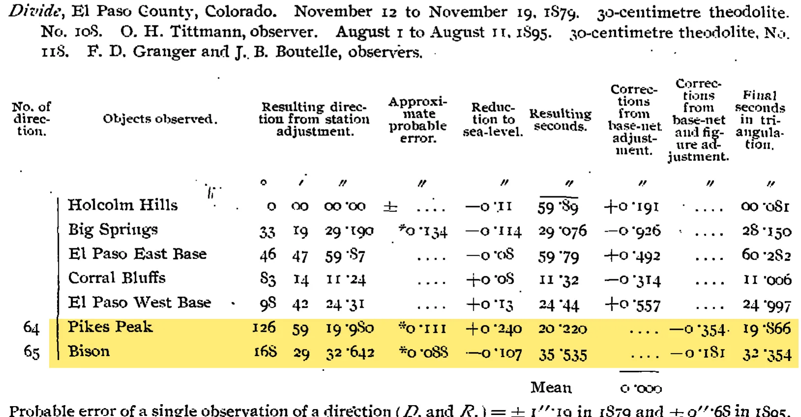
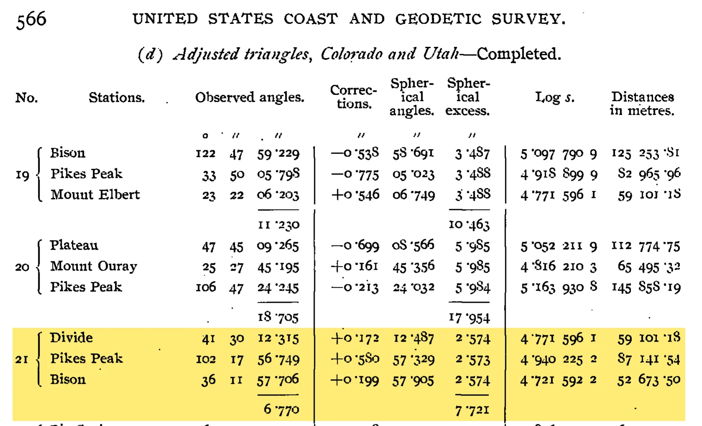

Raw Triangle Excess
1. What the book prints
Schott (1900, pp. 555 to 559) prints each station's horizontal directions in steps, column by column: the result of the station adjustment, the reduction to sea level, the resulting seconds, the corrections from the figure adjustment, and the final seconds. The station adjustment combines the repeated rounds at one station only. It does not use any other station, and it does not force any triangle to close.

The triangle table (pp. 564 to 566) then gives the "observed angles" (after the sea-level reduction), the figure corrections, the spherical angles and the computed spherical excess.

2. Method
- Angles. Each angle is the difference of two station-adjusted directions, with the printed sea-level reduction removed. Each computed angle was checked against the degrees printed in the triangle table.
- Raw closure. Angle sum − 180°. No model of the surface goes into this number.
- Area. Plane triangle (Heron's formula) from the printed sides. The area sets only the scale of the fit.
- To make planar. Correction = −(raw closure), per angle = one third of that, as distance = mean side × per-angle correction in radians.
- Fit. Closure = k × area, least squares through the origin, no weights. K = k in radians per m², R = 1/√K. Gauss (1827) gives the excess of a geodesic triangle as the curvature integrated over its area.
3. One triangle, step by step
Triangle 21, Divide - Pikes Peak - Bison. Sources: pp. 558, 559, 566
| Corner | Raw angle | Sea level | Observed (printed) | Figure corr. | Spherical (printed) |
|---|---|---|---|---|---|
| Divide | 41° 30′ 12.662″ | −0.347″ | 12.315″ | +0.172″ | 12.487″ |
| Pikes Peak | 102° 17′ 56.371″ | +0.378″ | 56.749″ | +0.580″ | 57.329″ |
| Bison | 36° 11′ 57.927″ | −0.221″ | 57.706″ | +0.199″ | 57.905″ |
| Sum − 180° | 6.960″ | −0.190″ | 6.770″ | +0.951″ | 7.721″ |
Raw angles worked out here from the station-adjusted directions. The other columns are printed. The resulting seconds for Bison at Divide are printed as 35.535″. 32.642″ − 0.107″ = 32.535″, and the observed angle at Divide (12.315″) confirms 32.535″, so 35.535″ is a misprint.
4. All triangles
Schott (1900, pp. 555 to 566), Colorado and Utah. Each row's pages link opens its triangle page and the direction pages of its three stations. Triangle 24 is left out because one of its angles was not observed.
| No | Triangle | Area km² | Raw closure | After sea level | Schott SE | Raw − SE | Planar corr. | Per angle | Mean side | As distance | Time | Pages |
|---|---|---|---|---|---|---|---|---|---|---|---|---|
| 1 | Wasatch - Tushar - Mount Nebo | 4,263 | 22.353″ | 22.325″ | 21.643″ | +0.710″ | −22.353″ | −7.451″ | 119.9 km | 4.33 m | 1.49 s | pages |
| 2 | Mount Ellen - Tushar - Wasatch | 6,761 | 34.078″ | 34.111″ | 34.332″ | −0.254″ | −34.078″ | −11.359″ | 126.9 km | 6.99 m | 2.27 s | pages |
| 3 | Patmos Head - Wasatch - Mount Nebo | 4,364 | 22.448″ | 22.417″ | 22.153″ | +0.295″ | −22.448″ | −7.483″ | 106.0 km | 3.84 m | 1.50 s | pages |
| 4 | Patmos Head - Mount Ellen - Wasatch | 6,607 | 32.475″ | 32.472″ | 33.549″ | −1.074″ | −32.475″ | −10.825″ | 130.0 km | 6.82 m | 2.17 s | pages |
| 5 | Mount Waas - Mount Ellen - Patmos Head | 9,592 | 48.504″ | 48.581″ | 48.709″ | −0.205″ | −48.504″ | −16.168″ | 149.4 km | 11.71 m | 3.23 s | pages |
| 6 | Tavaputs - Mount Waas - Patmos Head | 6,228 | 30.419″ | 30.352″ | 31.622″ | −1.203″ | −30.419″ | −10.140″ | 122.7 km | 6.03 m | 2.03 s | pages |
| 7 | Treasury Mountain - Mount Waas - Tavaputs | 9,718 | 49.434″ | 49.531″ | 49.345″ | +0.089″ | −49.434″ | −16.478″ | 159.9 km | 12.77 m | 3.30 s | pages |
| 8 | Uncompahgre - Mount Waas - Tavaputs | 9,089 | 45.382″ | 45.494″ | 46.152″ | −0.770″ | −45.382″ | −15.127″ | 162.2 km | 11.90 m | 3.03 s | pages |
| 9 | Uncompahgre - Mount Waas - Treasury Mountain | 8,898 | 44.997″ | 44.951″ | 45.184″ | −0.187″ | −44.997″ | −14.999″ | 154.9 km | 11.26 m | 3.00 s | pages |
| 10 | Treasury Mountain - Uncompahgre - Tavaputs | 9,527 | 49.049″ | 48.988″ | 48.378″ | +0.671″ | −49.049″ | −16.350″ | 165.0 km | 13.08 m | 3.27 s | pages |
| 11 | Uncompahgre - Mount Ellen - Mount Waas | 7,008 | 36.051″ | 36.064″ | 35.592″ | +0.459″ | −36.051″ | −12.017″ | 201.1 km | 11.72 m | 2.40 s | pages |
| 12 | Mount Ouray - Uncompahgre - Treasury Mountain | 5,032 | 26.144″ | 26.159″ | 25.554″ | +0.590″ | −26.144″ | −8.715″ | 108.3 km | 4.58 m | 1.74 s | pages |
| 13 | Mount Elbert - Uncompahgre - Treasury Mountain | 2,770 | 15.415″ | 15.420″ | 14.064″ | +1.351″ | −15.415″ | −5.138″ | 104.4 km | 2.60 m | 1.03 s | pages |
| 14 | Mount Elbert - Mount Ouray - Treasury Mountain | 2,292 | 13.549″ | 13.527″ | 11.639″ | +1.910″ | −13.549″ | −4.516″ | 79.2 km | 1.73 m | 0.90 s | pages |
| 15 | Mount Ouray - Uncompahgre - Mount Elbert | 4,555 | 24.278″ | 24.266″ | 23.128″ | +1.150″ | −24.278″ | −8.093″ | 113.6 km | 4.46 m | 1.62 s | pages |
| 16 | Bison - Mount Ouray - Mount Elbert | 3,288 | 15.704″ | 15.692″ | 16.695″ | −0.991″ | −15.704″ | −5.235″ | 90.9 km | 2.31 m | 1.05 s | pages |
| 17 | Pikes Peak - Mount Ouray - Mount Elbert | 4,404 | 20.930″ | 20.933″ | 22.362″ | −1.432″ | −20.930″ | −6.977″ | 105.8 km | 3.58 m | 1.40 s | pages |
| 18 | Pikes Peak - Mount Ouray - Bison | 3,177 | 16.406″ | 16.471″ | 16.130″ | +0.276″ | −16.406″ | −5.469″ | 94.1 km | 2.49 m | 1.09 s | pages |
| 19 | Bison - Pikes Peak - Mount Elbert | 2,061 | 11.180″ | 11.230″ | 10.463″ | +0.717″ | −11.180″ | −3.727″ | 89.1 km | 1.61 m | 0.75 s | pages |
| 20 | Plateau - Mount Ouray - Pikes Peak | 3,536 | 18.876″ | 18.705″ | 17.954″ | +0.922″ | −18.876″ | −6.292″ | 108.0 km | 3.30 m | 1.26 s | pages |
| 21 | Divide - Pikes Peak - Bison | 1,521 | 6.960″ | 6.770″ | 7.721″ | −0.761″ | −6.960″ | −2.320″ | 66.3 km | 0.75 m | 0.46 s | pages |
| 22 | Big Springs - Plateau - Pikes Peak | 1,503 | 9.794″ | 9.941″ | 7.630″ | +2.164″ | −9.794″ | −3.265″ | 60.9 km | 0.96 m | 0.65 s | pages |
| 23 | Big Springs - Pikes Peak - Divide | 1,103 | 5.278″ | 5.415″ | 5.602″ | −0.324″ | −5.278″ | −1.759″ | 54.7 km | 0.47 m | 0.35 s | pages |
Worked out here: raw closure, area, Raw − SE, the planar columns and time (15″ of arc = 1 s of time). "After sea level" and "Schott SE" are the printed sums.
Planar columns. A plane triangle sums to exactly 180°. "Planar corr." is the change the three raw angles would need to get there (the raw closure, with the sign reversed). "Per angle" spreads it equally over the three corners. "As distance" is how far that one angle change moves the station at the far end of a sight of the mean side length: distance = side × angle (in radians). Across the 23 triangles this is 0.47 m to 13.08 m per sight.
5. Curvature from the closures
| Input | k (″ per 10,000 km²) | R = 1/√K | Scatter (rms) | Intercept, if fitted |
|---|---|---|---|---|
| Raw (station adjustment only) | 50.80 ± 0.36 | 6,372 ± 22 km | 0.969″ | +0.72 ± 0.41″ |
| After sea-level reduction | 50.82 ± 0.36 | 6,371 ± 23 km | 0.981″ | +0.71 ± 0.42″ |
| Schott's computed spherical excess | 50.78 ± 0.00 | 6,373 ± 0 km | 0.002″ | -0.00 ± 0.00″ |
Worked out here.
- The smallest raw closure is 5.3″ and the largest is 49.4″. Every one is positive.
- Raw − SE averages +0.18″ with a spread of 0.97″. Schott gives the mean error of an adjusted angle as ±0.66″ (p. 566). Three angles give about ±1.1″ for a triangle.
- Fitted with an intercept, the closure at zero area is within 2σ of zero.
- The sea-level reduction changes the result by 1 km in R.
6. What the inputs still contain
- Station-adjusted directions are means of repeated rounds (direct and reversed) at one station. The single pointings are not printed.
- The sides come from the adjusted triangulation, reduced to sea level. They set only the area scale. A 0.1% error in scale changes R by 0.05%.
- Some triangles share angles (all the triangles of each quadrilateral are listed), so the ± values on R are smaller than an independent set would give.
- Deflection of the vertical and lateral refraction are in the angles as observed. For deflection in these two US chains, see the Goose report linked from the main page.
7. Files
raw_se.py in this folder holds every input value with its page and runs the whole calculation: python3 raw_se.py.
References
- Gauss, C. F. (1902). General investigations of curved surfaces of 1827 and 1825 (J. C. Morehead & A. M. Hiltebeitel, Trans.). Princeton University Library. (Original work published 1827)
- Schott, C. A. (1900). The transcontinental triangulation and the American arc of the parallel (Special Publication No. 4). Washington, DC: U.S. Coast and Geodetic Survey.
Aether Cosmology Research Group. Pre-release draft, November 2026.